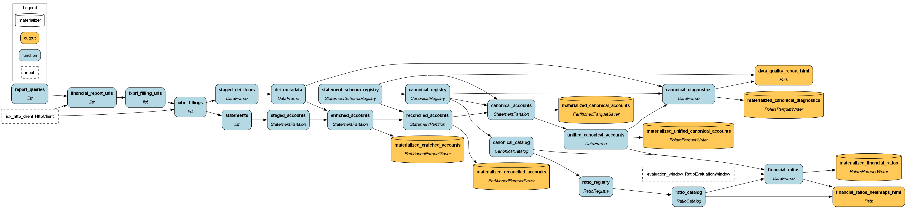

Acyclic DAG-driven pipeline for Indonesia Stock Exchange (IDX) financial reporting, taxonomy reconciliation, canonical standardization, and data quality assurance.
End-to-end lineage visualization from staged iXBRL & DEI metadata to reconciled statements, canonical mapping, financial ratio computation, and automated diagnostic reports.
